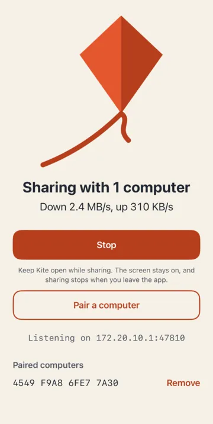

Tethering that follows your phone's VPN
Kite shares your phone's internet with your computer over USB or WiFi. The computer's traffic and DNS leave through the phone's own connection, so they follow its VPN, proxy or mobile network.
Free and open source under the GPL-3.0, with no ads and no time limits.
Small, and measured
These figures come from release builds, taken when each feature was merged. We have not measured the phone apps, and we have not compared Kite with other tools.
- 3.9 MB
The release binary of the
kitecommand, on Linux. - 3.9 MiB
Memory of the Linux daemon when idle, and 5.8 MiB with the tunnel up.
- 5.3 MiB
Working set of
kiteon Windows with the tunnel up. - 2.6 MB
Private memory of the Windows desktop app with only the tray icon (26 MB working set).
What sets Kite apart
It follows the VPN
Normal tethering is routed by the phone's system, and on most phones it skips the VPN. Kite opens a real connection on the phone for each one the computer makes, and looks up names there too.
Needs no root or jailbreak
On Android it is an app, plus USB debugging if you want the cable. On iPhone you sign the app with your own Apple ID.
USB without an adb server
Kite speaks ADB over USB itself, so no adb server has to run and the Windows installer does not ask for Android's platform-tools.
iPhone over USB too
An iPhone shares over the cable through usbmuxd, or over WiFi and its Personal Hotspot.
A kill switch, if you want it
Turn it on and nothing leaves the computer while the phone is disconnected. It works on Linux, Windows and macOS, and stays off until you choose.
Encrypted and paired
The link uses Noise. Each side trusts only the one it paired with, using a 6-digit code you type once.
Nothing is sent to us
Kite has no account, analytics or update check, and no server of ours sits in the path.
Native, no WebView
Kotlin on Android, SwiftUI on iPhone, and Slint with its software renderer on the desktop. No WebView and no Electron.
Builds you can verify
Releases are built by CI from a tag, with SHA-256 checksums, an SBOM and build provenance.
Three steps the first time, one after that
Install
Put the Kite app on the phone and Kite on the computer.
Pair once
The phone shows a 6-digit code. You type it on the computer.
Connect
Press Connect. The computer's traffic and DNS go through the phone.
To check it, open https://ifconfig.me before and after. It shows the address the phone's VPN or mobile network gives it. Step by step in the guides



Phones and computers it runs on
Android and Linux
A .deb or an AppImage. Debian 12 and Ubuntu 22.04 or newer.
Android and Windows
An MSI for Windows 10 and 11. Not signed yet.
Android and macOS
A package for macOS 12 or newer. It needs testers.
iPhone
Over USB, WiFi or the Personal Hotspot, signed by you with SideStore or AltStore.
Latest release with all downloads, checksums and build provenance.
What it can and cannot do
Kite is early software and says so. The threat model lists what is done, what is planned and the gaps we know about.
- Each side trusts only the one it paired with. The pairing code expires after two minutes, and five wrong tries lock pairing for a minute.
- The phone refuses connections to itself, so the computer cannot reach the phone's own services. Other devices on the phone's network stay reachable, because your traffic needs them.
- A paired computer can use all of the phone's data. There is no quota yet.
- Installers are not signed, because certificates cost money. You can check each file against its checksum and build attestation.
Open source, GPL-3.0
Read the code, report a bug, send a patch.